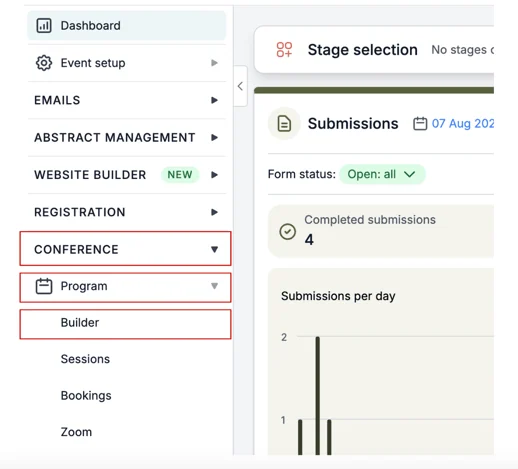
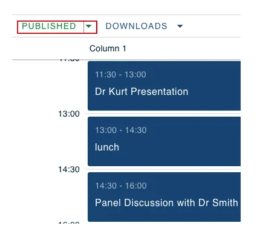
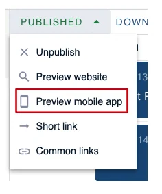
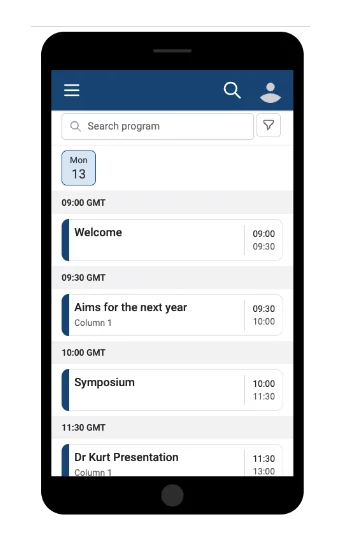
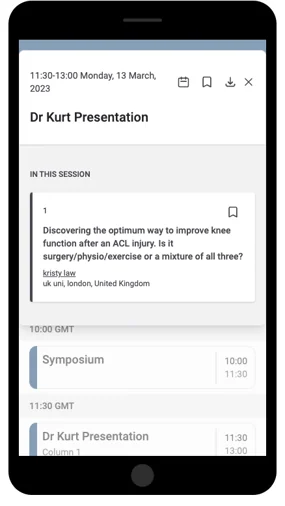

Viewing the mobile version of the program builder
One great aspect when using Oxford Abstracts is that you do not need a separate app to use our software on mobile. We are 100% mobile-friendly.#
This information is for Admins ONLY.
To view what your program builder will look like on a mobile device follow the instructions below.
From your dashboard go to the left-hand column, scroll down and click on Conference → Program → Builder.

On the next screen above your program builder, there is a button that will either say Published or Unpublished (dependent upon whether your program builder has been published or not).
Click the arrow that is to the right of this.

From the drop-down box select Preview Mobile App.

On the next screen, you can see what your program builder will look like on a mobile device.
This is interactive so you can scroll through and click on each session to see what information appears.


Should you require any further assistance, please contact our support desk via our Contact Form.
Did this page solve it?
Thanks — this helps us fix it.
Didn't solve it? Ask our support team
No question is too small, and there's no charge for asking. Raise a ticket and someone who knows the software will pick it up.